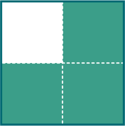
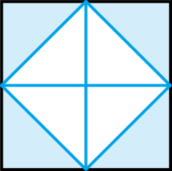

- 물음 1
- 물음 2
-
색칠한 부분은 전체의 얼마인가요?
-
색칠한 부분은 전체를 똑같이(으)로 나눈 것 중의2입니다.1
-
색칠한 부분은 전체를 똑같이(으)로 나눈 것 중의4입니다.3
-
예색칠한 부분은 전체를 똑같이(으)로 나눈 것 중의8입니다.4
-
-
색칠한 부분을 어떻게 나타내면 좋을까요?
예전체를 나타내는 수와 부분을 나타내는 수를 한 번에 나타내면 좋을 것 같습니다.
예전체를 똑같이 8로 나눈 것 중 4를 ‘8 중의 4’로 나타냅니다.